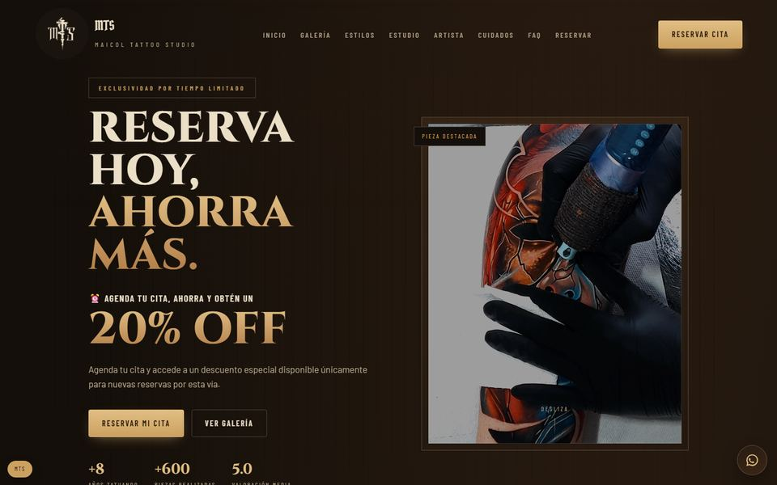

Caso 01
MTS Tattoo Studio
- Qué hace
- Sitio para un estudio de tatuajes con galería por estilos, reservas de citas y opiniones moderadas.
- Cómo está hecho
- API en Node.js y Express con validación, rate limiting y Helmet/CSP; datos en Supabase (PostgreSQL con RLS) y avisos al estudio por WhatsApp y correo. Frontend estático en HTML, CSS y JavaScript.
- Riesgo → defensa
-
- Abuso del formulario de reservas → rate limiting
- Datos de entrada inválidos → validación y saneado de campos en la API
- Scripts inyectados (XSS) → cabeceras de seguridad con Helmet y CSP
- Acceso a datos que no corresponden → RLS en PostgreSQL
- Opiniones no deseadas → moderación antes de publicarse
- Stack
- Node.js · Express · PostgreSQL · Supabase · Vercel · GitHub Actions